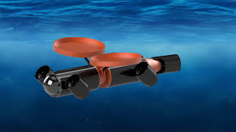

Innovations in Underwater Robotics: Transforming Maritime Exploration and Industry
Introduction
Underwater robotics is transforming the maritime industry, enabling advanced exploration, monitoring, and maintenance of underwater environments. These innovative technologies are crucial for a variety of applications, from scientific research to oil and gas extraction. In this blog post, we will explore the advancements in underwater robotics, their applications, and the impact they have on maritime operations.

Advancements in Underwater Robotics
Autonomous Underwater Vehicles (AUVs)
AUVs are self-operating robots designed to carry out underwater tasks without direct human control. They are equipped with sensors and cameras to collect data and perform inspections.
- Deep-sea Exploration: AUVs can explore depths that are unreachable by humans, providing valuable data on marine ecosystems and geological formations.
- Pipeline and Cable Inspections: These robots are used to inspect underwater pipelines and cables for maintenance and repair, ensuring the integrity of underwater infrastructure.

Remotely Operated Vehicles (ROVs)
ROVs are controlled by operators on a surface vessel through a tether. They are used for more complex tasks that require human decision-making.
- Construction and Repair: ROVs assist in the construction and repair of underwater structures, such as oil rigs and bridges.
- Environmental Monitoring: They are also used for environmental monitoring, helping to track pollution levels and assess the health of marine ecosystems.
Applications of Underwater Robotics
Underwater robots have a wide range of applications in the maritime industry, from commercial operations to scientific research.
- Oil and Gas Industry: Underwater robots are essential for inspecting and maintaining offshore oil and gas platforms, ensuring safe and efficient operations.
- Marine Research: Scientists use underwater robots to study marine life and ecosystems, providing insights into ocean biodiversity and health.
- Search and Rescue: These robots assist in search and rescue operations, locating and recovering objects and individuals in underwater environments.
Future Trends in Underwater Robotics
The future of underwater robotics is promising, with ongoing advancements in technology and increasing applications across various industries.
- Enhanced Autonomy: Future underwater robots will have improved autonomous capabilities, enabling them to perform more complex tasks with minimal human intervention.
- Advanced Sensors: Advances in sensor technology will enable robots to collect more detailed and accurate data from underwater environments.
- Sustainable Practices: Underwater robots will play a key role in promoting sustainable practices in the maritime industry, helping to protect and preserve marine ecosystems.
Conclusion
Underwater robotics is revolutionizing the maritime industry, offering innovative solutions for exploration, monitoring, and maintenance of underwater environments. As technology continues to advance, the capabilities and applications of these robots will expand, driving further progress in maritime operations and environmental protection.